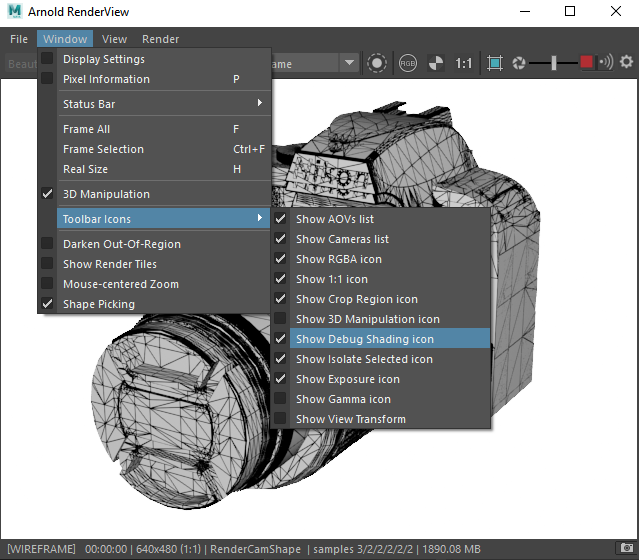
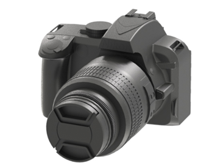
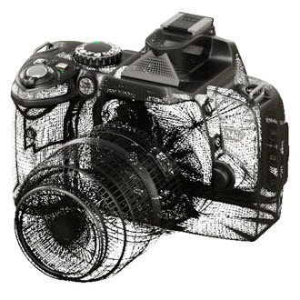
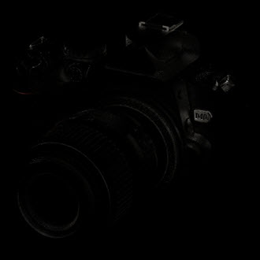

摄影机产品可视化
本教程将介绍如何对 DSLR 摄影机的 CAD 模型进行照明、着色和渲染。我们介绍了包括产品画面在内的各种风格以及可在产品小册子中使用的说明性风格。这些样式包括线框、facing_ratio（x 射线）和卡通边。我们还将介绍如何使用工具着色器创建渲染过程以在合成软件包中使用，以及如何将其用于调试场景。
要下载 DSLR 摄影机模型，请单击此处。
导入 CAD 数据
- 首先，下载 CAD 模型（上面的链接）。
- 您应该会在 .zip 文件中看到以下各部分。将数据解压缩到硬盘。
选择文件，然后将其从文件资源管理器拖动到 Maya 视口中。Maya 随后会为您转化 CAD 几何体。您应该会看到模型显示在 Maya 场景中（请参见下文）。
确保在插件管理器中加载了 ATFPlugin.mll 插件，否则摄影机几何体将无法导入。
该模型源自一个采用 Z 上方向轴的 CAD 软件包，而 Maya 默认采用 Y 上方向轴。转到“首选项 -> 设置 -> 世界坐标系”(Preferences -> Settings -> World Coordinate System)，然后将其更改为 Z。
在 Maya 中导入的 CAD 文件。世界坐标系：Z
照明
场景简单地使用连接到 skydome_light.color 的工作室 HDRI 进行照明。
- 在“创建”(Create)选项卡下选择“Arnold”，然后单击“Arnold 灯光”(Arnold Light)。在视口中单击以创建 skydome_light。
- 在 X 轴上将 skydome_light 旋转 90 度（这是因为场景的方向设置为 Z 上方向）。
- 将 skydome_light 的摄影机可见性减少到 0。我们稍后将添加一个单独的白色背景。
- 将文件纹理连接到 skydome_light 的“颜色”(Color)属性，然后选择一个合适的 HDRI。要下载可用于此场景的工作室 HDRI 示例，请单击此处。
为 skydome_light 的“纹理”(Texture)选择位图 (HDRI)
为了测试照明，我们可以快速为摄影机指定 standard_surface 着色器。
- 在 Hypershade 窗口中，创建一个 standard_surface 着色器并将其指定给摄影机。
- 将其 base_color 更改为黑色。
- 使用默认的 Arnold 采样设置渲染场景。这些设置适用于使用 IPR 对场景进行测试渲染。目前，不必担心场景中的任何噪波。我们在制作结束时对照明和着色满意后，将更改采样设置。
功能覆盖(Feature Overrides)：此开关组可用来禁用一系列重要的渲染功能。通过有选择地禁用某些功能，您可以了解到渲染器将大多数时间花在哪里，从而有助于优化场景。例如，启用 ignore_textures 或 ignore_shaders 可以加快照明或外观开发速度。这也有助于在调试时隔离错误和瑕疵。请注意，这些选项并非都是交互式选项，部分选项可能需要刷新/导出整个场景。
渲染设置 -> 诊断 -> 功能覆盖(Render Settings -> Diagnostics -> Feature Overrides)
调试着色(Debug Shading)：此选项使用各种调试着色模式临时替换应用于所有对象的着色。此选项仅用于交互式渲染，不会更改 Maya 场景中的任何内容。

“调试着色”(Debug shading)：“线框”(wireframe)
要下载对应的工作室照明场景，请单击此处。
背景(Background)
接下来，我们需要将背景环境颜色更改为白色。
- 转到“渲染设置 -> 环境* -> *背景”(Render Settings -> Environment -> Background)， 然后创建一个 ray_switch 着色器。
- 将“摄影机光线类型”(Camera Ray Type)更改为白色。
“环境 -> 背景 -> ray_switch.camera”(Environment -> Background -> ray_switch.camera)：白色
 |
|
| 背景：颜色：黑色（默认值） | 背景：颜色：白色 |
逼真着色
我们要创建一个可进行复制并用于主机身、皮质的手柄和镜头的塑料着色器。我们还将为转接环创建各向异性金属着色器，并为镜头和闪光灯创建玻璃着色器。
机身
创建一个 standand_surface 着色器，并将其指定给摄影机的主机身和镜头。更改以下参数：
- base_color：黑色。
- specular_roughness：0.467。
- specular_IOR：1.55（塑料）。
- coat_weight：0.1
- coat_roughness：0.3
- coat_IOR：1.55（塑料）。

皮革样式凹凸
我们可以使用 cell_noise 着色器为摄影机的夹点着色器创建逼真的皮革纹理。
- 复制塑料着色器并将其指定给皮革夹点对象。
- 将 bump3d 连接到 standard_surface 的 normal 参数。
- 将 cell_noise 连接到 bump3d 的 bump_map 参数。使用 bump 3d 而不是 bump 2d，这意味着我们不必考虑模型的 UV，因为它将在 3D 对象空间中进行渲染。
- 将 cell_noise 的 pattern 更改为 alligator。这将呈现皮革样式外观。
- 将 octaves 的数量增加到 8。
- 您可能需要根据摄影机模型的大小增加 scale。在本例中，使用的值为 6。
- 将 density 减小到 0.5 左右。
| 未使用凹凸 | cell_noise -> bump3d |
cell_noise -> bump3d -> standard_surface
摄影机镜头转接环
我们将创建一个可用于摄影机转接环的各向异性金属材质。
- 指定另一个 standard_surface 着色器。将其指定给摄影机机身上的金属转接环，并将其重命名为“Metal Ring”。
- 将 base_color 更改为中灰色。
- 将 metalness 增加到 1。
- 将 specular_roughness 增加到 0.7 左右。数量越低，外观越有光泽。
为了创建各向异性金属效果，我们将使用 ramp_rgb -> specular_ anisotropy。 我们将使用 uv_projection 着色器对其进行投影，以避免 CAD 几何体出现任何 UV 问题。
创建一个 ramp_RGB 着色器，并将 type 更改为 radial。 插入大约 5 个黑色结和 4 个白色结。确保将其 interpolation 设置为 catmull-rom (smooth)。
将其连接到 uv_projection 着色器。这可将 ramp_rgb 平面投影到金属环上。
将 uv_projection 连接到 standard_surface 着色器的 specular_anisotropy。
您可能会注意到，使用 specular_anisotropy 时高光部分会出现分面现象。通过启用“平滑细分切线”(Smooth Subdivision Tangents)（使用 Arnold subdiv_smooth_derivs 参数），可以去除面状外观。请注意，这至少要求多边形网格中有一次细分迭代。
| 未使用各向异性 | ramp_RGB -> anisotropy |
anisotropic_rotation 可用于更改 specular_anisotropy 高光的位置。
ramp_rgb -> uv_projection -> standard_surface
玻璃镜头
- 为了显示镜头，应先隐藏镜头盖（在“场景资源管理器”(Scene Explorer)窗口中，为 cache.1、cache2.1 和 cache2.1.1 的对称部分）。
- 将另一个 standard_surface 着色器指定给玻璃镜头几何体 (Body.8)，并将其命名为“Lens Glass”。
- 将 specular_roughness 减小到 0。
- 将 specular_IOR 更改为 1.5（玻璃）。
- 将 transmission 增加到 1。
- 在 thin_film 下，将 thickness 增加到 450 左右，将 thin_film.ior 增加到 1.28 左右。
| thin_film.thickness：0（默认值） | thin_film.thickness：454 |
风格化着色
现在，我们将介绍用于创建风格化渲染效果的各种着色方法，如线框、正交线状图 (toon)、 x 射线 (facing_ratio) 和切除渲染 (clip_geo)。
|  |  |
 |
||
| wireframe -> opacity | toon | facing_ratio -> opacity | utility -> toon_edge | clip_geo |
线框着色器
- 为了创建线框/半着色外观，我们可以使用连接到之前创建的黑色塑料着色器的 opacity 的线框着色器。
- 将 edge_type 更改为 polygons。 将 line_width 调整为较低的值。在本例中，使用的值为 0.02。
线框 -> standard_surface 的“不透明度”(Opacity)
卡通着色器
将卡通着色器指定给所有摄影机几何体。更改以下参数：
将 angle_threshold 减小到 10 左右。这将在几何体周围提供更详细的边。
将 base_weight 减小到 0。我们将仅使用 emission。
确保 specular_weight 为 0。
将 emission_weight 增大到 1。
卡通着色器目前无法与 GPU 结合使用。此问题计划在未来版本中修复。
要查看 toon edge， 必须将“过滤器类型”(filter type) （采样设置）更改为“轮廓”(C ontour) 。请注意，增加轮廓*过滤器的*“宽度”(width)（采样设置）值将会增加渲染时间。
另一个变体是将工具（color_mode：geometric_normal (ng)）着色器连接到卡通着色器的 edge_color（emission_weight：0）。
utility -> toon.edge_color
正面比着色器
我们可以使用 facing_ratio 着色器创建 X 射线着色效果。
- 指定 standard_surface 着色器，并将所有 weight 减小到 0。
- 创建一个 facing_ratio 着色器，并将其连接到 standard_surface 着色器的 opacity。
- 将 bias 减小到 0.1 左右。
- 为了进一步优化效果，在 facing_ratio 和 standand_surface 着色器之间连接一个 color_correct 着色器。
facing_ratio -> color_correct -> standard_surface
剪裁几何体着色器
我们可以使用 clip_geo 着色器在摄影机模型中创建切除着色效果。
- 创建一个长方体（要用于剪裁的几何体），并将其放置到要剪裁几何体的位置（在本例中，它切入到镜头中）。
- 将 clip_geo 着色器指定给长方体。
clip_geo 当前无法与 GPU 结合使用。此问题计划在未来版本中修复。
AOV
AOV 是 Arnold 中对渲染过程进行渲染的方法。它们提供了一种将任意着色网络组件渲染到不同图像的方法。例如，美工人员可能会发现，使用 AOV 可以很方便地将直接照明和间接照明贡献分开，随后在合成期间再将它们重新合并到一起。Arnold 提供了用于输出深度、位置和运动向量的内置 AOV。
合成美景 AOV：我们可以将 RGBA 美景 AOV 分割成多个较小的 AOV，每个 AOV 包含部分照明。在合成过程中，可以单独修改这些 AOV，然后将它们加在一起，得到完整的美景 AOV。AOV 越多越可以更好地控制合成，但也需要处理额外工作，它们会占用更多内存和磁盘空间，特别是与灯光组相结合时更是如此。
以下是一些将 AOV 添加在一起以获得完整美景 AOV 的示例：
- direct、indirect、emission、background。
- diffuse、specular、coat、transmission、sss、volume、emission、background。
- diffuse_direct、diffuse_indirect、specular_direct、specular_indirect、coat、transmission、sss、volume、emission、background。
只需将此类 AOV 添加在一起便可获得美景 AOV。重建美景 AOV 不需要反照率 AOV，但在有些情况下可能需要使用反照率 AOV，例如，通过将 diffuse 除以 diffuse_albedo 以便只获取没有曲面纹理的照明时，或者仅对照明降噪而保持纹理细节不变时。
| RGB AOV | 背景 AOV | 漫反射 AOV |
|  | ||
| 镜面反射 AOV | specular_indirect AOV | 透射 AOV |
- 要访问 AOV，请转到 Arnold 渲染设置(Render Settings) 窗口中的“AOV”(AOVs)选项卡。
任意输出变量 (AOV) 管理器。创建漫反射、镜面反射、specular_indirect、透射和背景 AOV。
- 选择文件类型。通常建议使用默认的 EXR，但是，在此示例中，我们将使用 Png，因为我们将在 Photoshop 中直接重建 RGBA 美景。
- 从“渲染视图”(Render View)窗口或通过“渲染 -> 批渲染”(Render -> Batch Render)渲染 AOV 并将其输出到磁盘。
Cryptomatte：Cryptomatte AOV 也可用于创建 ID 蒙版，供以后进行合成。凭借对运动模糊、透明度和景深的支持，Cryptomatte 可以自动创建 ID 蒙版。可以使用名称、对象名称空间和材质名称组织场景中的 ID 蒙版。
 |
||
| crypto_asset | crypto_object | crypto_material |
在 Photoshop 中合成
- 在 Photoshop 中打开已保存到磁盘的 AOV。
- 将每个 Png 中的层拖放到“背景”(Background)图像层中，如下图所示。
- 对于每个层，将混合层模式更改为“线性减淡(添加)”(Linear Dodge (Add))。您应该会看到最终美景层。
要为 RGBA 美景 AOV 创建正确的重建，必须在合成中使用添加/相加操作。如果使用滤色或相乘，将得到错误的结果。
在 Photoshop 中打开 AOV 并使用“线性减淡(添加)”(Linear Dodge (Add))一起进行分层
工具颜色模式：工具着色器是常规“通用”工具节点着色器，也可用来创建供合成软件包使用的过程。它还可以用来调试场景。例如，geometric_normal 位置可用于在后期制作中对模型重新照明。
工具着色器使用的各种颜色模式
最终渲染设置
在进行最终帧渲染时，我们需要增加一些采样设置。
如果您不确定噪波来自何处，请记得检查 AOV。
- 选择天穹灯光，并将采样数增加到 3 或 4。这应该会清除阴影中的大量噪波。
| 天穹灯光采样数：1（默认值） | 天穹灯光采样数：4 |
- 将“摄影机(AA)”(Camera(AA))值增加到 5 左右。这将提高常规图像质量。
- 即使我们增加了“摄影机(AA)”(Camera(AA))采样数，镜头上仍存在一些噪波（在镜面反射 AOV 中可见）。我们可以通过将镜面反射采样数增加到 4，进一步减少噪波。请注意，增加此值后，渲染时间将增加。
 |
|
| 镜面反射采样数：2（默认值）。镜面反射噪波在镜头上可见。 | 镜面反射采样数：4。噪波已得到改善。 |
就是这样。您已看完本教程。做得不错！